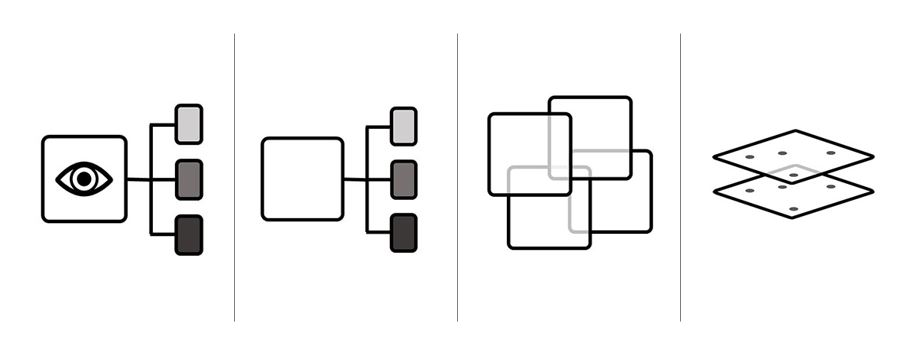

Remote Sensing Learning Modules

Enhancing Capacity in Geospatial Information Technology (GIT) Programs at Tribal Colleges and Universities
From 2017 - 2018, as a project assistant on a Tribal Colleges and Universities Program (TCUP) grant, I worked with educators and students at the Southwestern Indian Polytechnic Institute to develop a series of four learning modules on remote sensing topics using a diverse set of GIS and photogrammetric software:
- Structure-from-Motion / Multi-View Stereo (SfM-MVS) for 3D Terrain Modeling in Agisoft Photoscan
- Geometric Rectification in QGIS
- Supervised Classification for Land Use / Land Cover Mapping in ArcMap
- Unsupervised Classification for Land Use / Land Cover Mapping in ArcMap
I presented these modules at multiple events for SIPI Geospatial Information Technology Program students both at the University of New Mexico and on the SIPI campus, as well as for tribal professionals at the 2019 Tribal GIS Conference and for UNM students and visitors during UNM GIS Day events. Additionally, I led workshops on RTK surveying for ground control of aerial maps at UNM and SIPI.
I later created an additional module on the Elements of Interpretation to accompany the Drones for Ducks project.